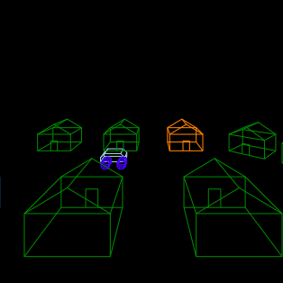
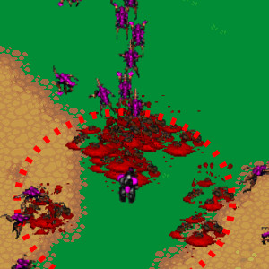
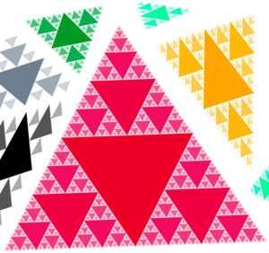
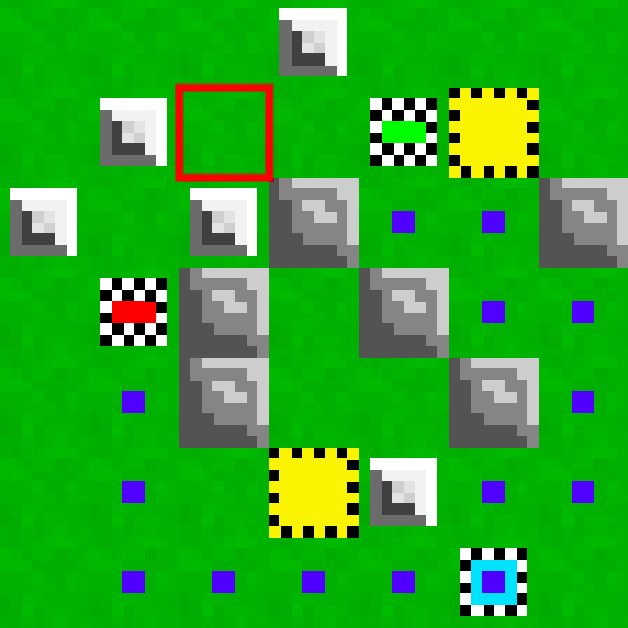
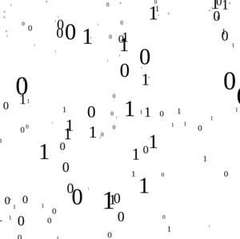

A JavaScript Mandelbrot Set explorer and animator.
A custom 3D wireframe rendering using no external libraries.
Survive waves of StarCraft Zerglings. How long can you last?
recursively draw the Sierpinski Triangle fractal.
A tower defense game that is different every time you play.
A fun graphical project that rains "1" and "0"s.
Music generated by deep learning rrn neural networks.
A.I. Rock Paper Scissors. A game that learns from your choices.
Control a swarm of bugs.
Move and build in a 3D voxel world. (Unfinished)
Copyright © Andy Smith 2021